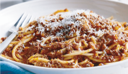

        <div class="view view-main">
        <!-- Initial Page, "data-name" contains page name -->
        <div data-name="pasta_bolognesa" class="page">

          <!-- Top Navbar -->
         <div class="navbar">
              <div class="title_nm_2">
              <ul>
                  <li> <a href=""><i class="back fas fa-arrow-circle-left"></i></a></li>
                  <li><p>Atrás</p></li>
              </ul>
              </div>
          </div>

          <!-- Bottom Toolbar -->

          <!-- Scrollable page content -->
          <div class="page-content arco_nm">

            <!-- Link to another page -->
          <div class="titulo_estrellas">
          <h2>Pasta Bolognesa</h2>
        <div class="estrella_2">
           <i class="star fas fa-star"></i>
            <i class="star fas fa-star"></i>
            <i class="star fas fa-star"></i>
            <i class="star fas fa-star"></i>
            <i class="star far fa-star"></i>
            <p>200 votos</p>
            </div>
    </div>
         <div class="foto_info_nm">
             
             <ul class="info_nm">
                 <li><i class="far fa-clock"></i>40min</li>
                 <li><p>Ingredientes:8</p></li>
                 <li><p>Porciones:2</p></li>
             </ul>
         </div>
         <a href="#" id="tn"><div class="boton_tablanutricional"><p id="tabla">Tabla nutricional</p>

         </div></a>
         <div class="ingredientes_nm">
             <h3>Ingredientes</h3>
               <ul>
                 <li><i class="ciro far fa-circle"></i><p>2 libras de espaguetis</p></li>
                 <li><i class="ciro far fa-circle"></i><p>4/ tomates pelados y cortados en trocitos</p></li>
                 <li><i class="ciro far fa-circle"></i><p>3/ cebollas cabezonas ralladas</p></li>
                 <li><i class="ciro far fa-circle"></i><p>1 libra de carne molida</p></li>
                 <li><i class="ciro far fa-circle"></i><p>1/2 libra de queso parmesano</p></li>
                 <li><i class="ciro far fa-circle"></i><p>2 cucharadas de mantequilla</p></li>
                 <li><i class="ciro far fa-circle"></i><p>1 tarro de past de tomate</p></li>
                 <li><i class="ciro far fa-circle"></i><p>Sal y pimienta</p></li>
             </ul>
         </div>
         <div class="preparacion_nm">
                <h3>Preparación</h3>
                <ol>
                 <li>En primer lugar, vamos a poner al fuego una olla con abundante agua y sal. Una vez entre en ebullición el agua, introduciremos los espaguetis junto con la mantequilla y coceremos durante 12 minutos.</li>
                 <li>Cuando la pasta esté en su punto, es decir, al dente, la sacamos de la olla y escurrimos con agua fría para cortar la cocción.</li>
                 <li>Cortamos la cebolla muy fina y la pochamos con un poco de aceite. Una vez pochada, añadimos la carne picada y la regogamos junto con la cebolla.</li>
                 <li>Condimentamos con  pimienta negra, nuez moscada y sal. Añadimos ahora la salsa de tomate, cocinamos durante un par de minutos y retiramos del fuego.</li>
            </ol>

         </div>
         <div class="home_nm">
             <a href="#" class="home_nm"></a>
         </div>
         <div class="califica_nm">
             <p>¿Qué tanto te gustó esta receta?</p>
             <form>
  <p class="clasificacion">
    <input id="radio1" type="radio" name="estrellas" value="5"><!--
    --><label for="radio1">★</label><!--
    --><input id="radio2" type="radio" name="estrellas" value="4"><!--
    --><label for="radio2">★</label><!--
    --><input id="radio3" type="radio" name="estrellas" value="3"><!--
    --><label for="radio3">★</label><!--
    --><input id="radio4" type="radio" name="estrellas" value="2"><!--
    --><label for="radio4">★</label><!--
    --><input id="radio5" type="radio" name="estrellas" value="1"><!--
    --><label for="radio5">★</label>
  </p>
</form>
         </div>
          </div>
        </div>
      </div>
